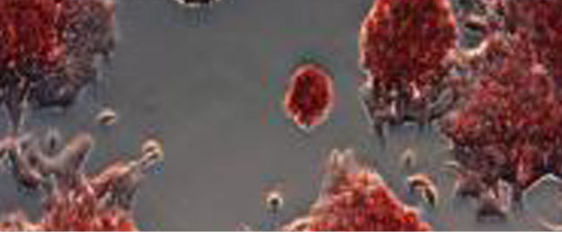

Quick adoption adn minimal training enabled by our user-centric design
 A150 - MEMS Analyzer
A150 - MEMS Analyzer M150 - MEMS Analyzer
M150 - MEMS Analyzer F133 - MEMS Analyzer
F133 - MEMS Analyzer P120 - MEMS Analyzer
P120 - MEMS AnalyzerLatest news from Ardic
Latest News
2011 June 15
ARDIC Instruments Booth at NANO TECH 2012 in Japan
Abnova Corporation and Ardic Instruments announced today the collaboration and introduction of a label-free, protein detection platform based on a new fiber-optic particle, plasmon resonance (FO-PPR) system. This new protein platform opens up several avenues of applications ranging from protein quantification to protein-protein/protein-small molecule interactions to kinetic measurements. Most importantly, the FO-PPR technology addresses an unmet need for higher sensitivity, protein quantification using a stand-alone, capturing antibody. In contrast, the conventional sandwich ELISA platform requires both capturing and detection antibody for protein detection. It is also handicapped by a limited dynamic range and inadequate sensitivity to measure many biologically and clinically relevant biomolecules at wide-apart and lower physiologic concentrations. Collectively, these attributes undermine sandwich ELISA platform in today’s fast-paced yet highly demanding translational research, preclinical and clinical settings. Abnova and Ardic collaboration aims to leverage each other’s expertise in reagent manufacturing and instrument engineering to provide an integrated solution for label-free, protein quantification markets. A point-of-care, IVD system based on FO-PPR technology for H1N1 influenza virus detection will be introduced at the upcoming American Academy Clinical Chemistry conference in Atlanta, GA in July. Both companies will work together to navigate the influenza test through the regulatory track in Taiwan. Moreover, an open system for the research market would be available before the end of the year for worldwide sales by Abnova.
“We are very excited to have the opportunity to collaborate with Ardic to introduce an unprecedented label-free system for the biotech industry,” said Dr. Wilber Huang, President and CEO of Abnova. Ardic, has assembled an outstanding team of optical, microfluidic, and electrical engineers with knowledge and expertise that rivals the counterparts in the US and Europe. The use of fiber-optic technology remarkably improved the performance of the traditional plasma resonance technology by obviating high cost optical alignment while increasing the sensitivity by implementing a 3-D (instead of 2-D) detection environment and decreasing the background noise by partitioning the optical signal and the biochemical reaction. Moreover, the use of the plasmon resonance is amenable to real-time and kinetic measurements. “We have tested the performance of the FO-PPR system using Abnova’s pre-validated H1N1 reagents. The convenience of single capturing antibody for virus detection means that the system is well-positioned to monitor the high frequency of viral protein changes inherent in the seasonal or pandemic influenza outbreaks. As for the research market, Abnova aims to validate a large collection of antibodies so that the customers can readily purchase established reagents off-the-shelf for convenience and ease-of-use.”
“As an instrument developer, we are eager to work with an antibody reagent manufacturer like Abnova,” stated Dr. Jerome Shen, President & CEO of Ardic Instruments. “Being a pioneer in this new field of FO-PPR, we are keen to have the largest possible applications available to the customers to capture a greater market share in today’s com
Ardic Highlights
-
2011 June 15
Abnova & Ardic Instruments Introduce New Fiber-Optic Protein Quantification System for Research and In Vitro Diagnostic (IVD) Markets
-
2011 June 15
Abnova & Ardic Instruments Introduce New Fiber-Optic Protein Quantification System for Research and In Vitro Diagnostic (IVD) Markets
-
2011 June 15
Abnova & Ardic Instruments Introduce New Fiber-Optic Protein Quantification System for Research and In Vitro Diagnostic (IVD) Markets
Upcoming Events
-
Jun. 19 - 21, 2012 Taipei, Taiwan
-
Jun. 19 - 21, 2012 Taipei, Taiwan